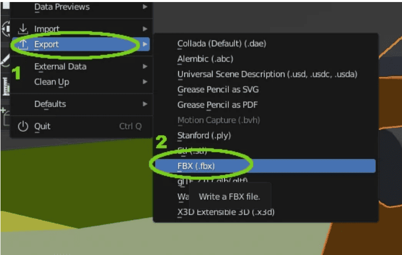

Quiz wiedzy: Unity & Blender
10 Pytań
2. Zaznacz wszystkie technologie wymienione w poradniku jako kluczowe.
3. Jaki format pliku jest rekomendowany do przenoszenia modeli z Blendera do Unity?
4. Ustaw etapy eksportu z Blendera w dobrej kolejności (przeciągnij pierwszt element na górę).
- Wybierz File -> Export -> FBX
- Zaznacz model w Blenderze
- Skonfiguruj ustawienia (np. Mesh)
5. Dopasuj narzędzie do jego roli (przeciągnij kolorowe klocki w szare pola).
Silnik Gry
Modele 3D
Logika (C#)
Unity:
Blender:
Skrypty:
6. Jaka wartość zmiennej 'predkosc' została ustawiona w przykładowym kodzie?
7. Uzupełnij luki w kodzie, aby ruch był płynny i niezależny od klatek.
transform.Translate(Vector3.forward * predkosc * );
8. Metoda Start() wykonuje się w każdej klatce gry (np. 60 razy na sekundę).
Fałsz
Prawda
9. Który obrazek przedstawia "Inspektora" w Unity (edycję komponentów)?
Kliknij lupę, aby powiększyć. Kliknij obrazek, aby wybrać.



10. Kliknij przyciski w poprawnej kolejności importu assetu do Unity.
Musisz kliknąć je po kolei